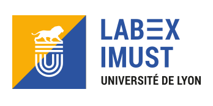

A propos
PlumeX est une plateforme financée par le Labex iMust de l'Université de Lyon.
Partenaires du projet :
- Francesca Chillà, LPENS de Lyon (UMR CNRS 5672) Recherche : Convection thermique, Turbulence, Turbulence inhomogène, Structure cohérentes.
- Sylvain Joubaud (PI), LPENS de Lyon (UMR CNRS 5672) Recherche : Ondes internes, Écoulements stratifiés, Milieux granulaires, Suspensions, Fluides complexes.
- Hervé Pabiou, CETHIL (UMR CNRS 5008) Recherche : Convection naturelle ; Instabilités dans les écoulements ; Convection turbulente ; Transferts de chaleur par convection ; Application à l'intégration de capteurs solaires photovoltaïques-thermiques aux bâtiments en configuration double-peaux
- Julien Salort, LPENS de Lyon (UMR CNRS 5672) Recherche : Convection thermique turbulente, Ventilation naturelle, Microfabrication d'instruments pour les petites échelles de la turbulence, Turbulence de l'hélium superfluide
- J John Soundar Jerome, LMFA (UMR CNRS 5509) Recherche : Interaction fluide/structure, Milieux granulaires denses, Suspensions, Écoulements diphasiques, Atomisation, Instabilités hydrodynamiques